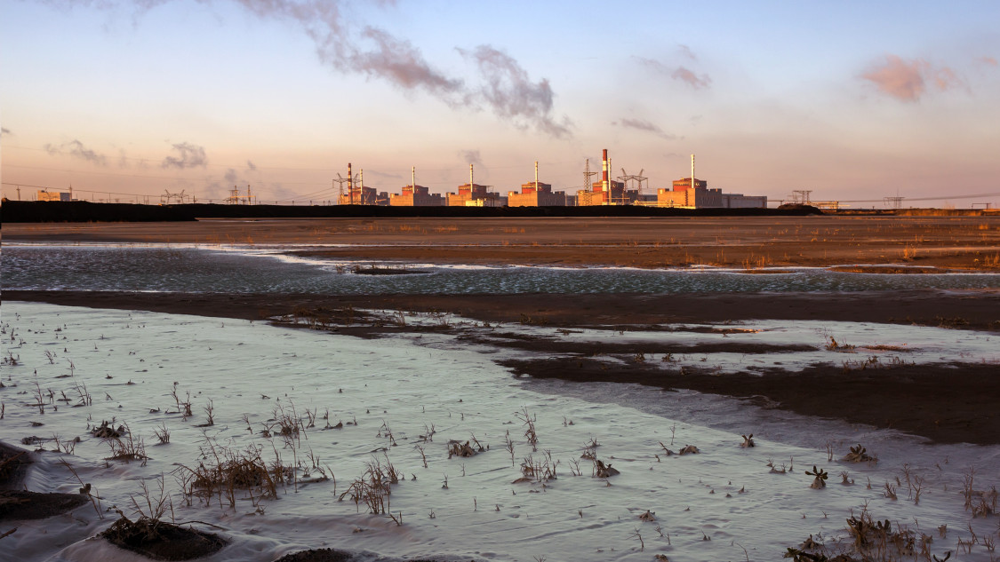
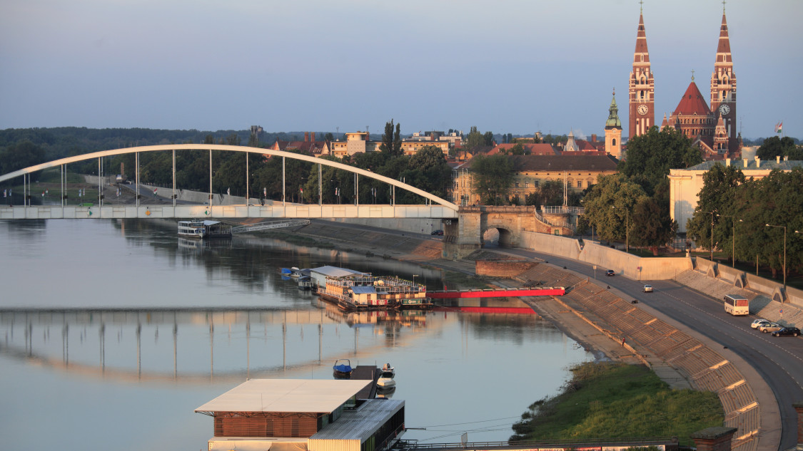
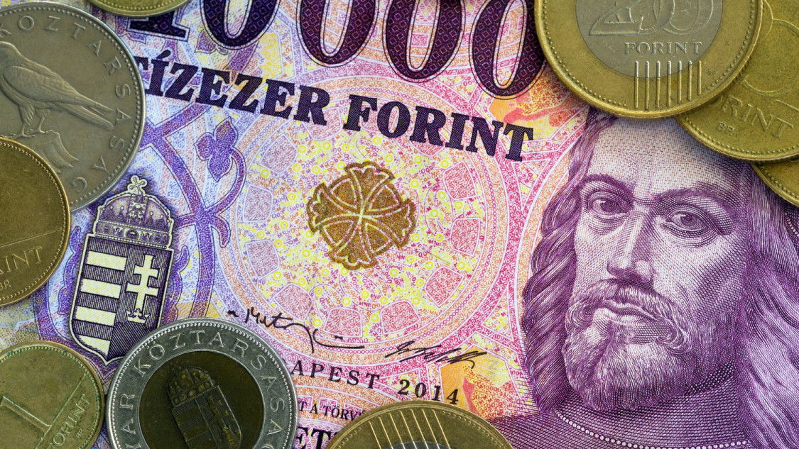

A legfrissebb gazdasági hírek
Álhírnek nevezte Petro Kotyin, az ukrajnai atomerőműveket üzemeltető Enerhoatom vállalat elnöke csütörtökön azokat az orosz állításokat, amelyek szerint az orosz megszállás alatt álló zaporizzsjai atomerőműnek orosz üzemanyagra lenne szüksége. Kotyin az interjúban beszélt arról is, hogy leginkább attól tart, hogy leállhat a reaktorokat hűtő rendszer áramellátása, és elveszíthetik a vészhelyzet esetén működésbe lépő, dízelolajjal működő aggregátorokat, amelyeknek csak tíz napra elegendő üzemanyag
A Reuters hírügynökségnek adott interjúban Kotyin azt mondta, az atomerőmű friss fűtőanyag-utánpótlással rendelkezik.
Nagyon sok pletyka és álhír kering az oroszok részéről. Ha át akarnának állni egyik beszállítóról a másikra, akkor annak már csak az előkészítése is nagyjából három évet venne igénybe
- állította az Enerhoatom elnöke.
Steiner Attila, a Technológiai és Ipari Minisztérium (TIM) energetikáért felelős államtitkára a következőket mondta: a kormány kiemelt célja, hogy a lakosság és a gazdaság számára folyamatosan biztosított legyen a megfizethető üzemanyag. A nyáron felszabadított stratégiai tartalékok jelentős hányadának visszatöltése még az idén megvalósulhat, ennek első részleteként közel 50 millió liter gázolaj megvásárlásáról született döntés.
Az államtitkár emlékeztetett, hogy a kormány a hazai üzemanyagellátás biztosítása érdekében augusztusban 184 millió liter dízelolajat szabadított fel az ország stratégiai tartalékaiból. A felszabadított készlet a stratégiai gázolajkészlet 38 százaléka, a gázolaj előállítására alkalmas kőolaj- és dízelkészletnek pedig együttesen a 24 százaléka
A hatályos szabályozás értelmében a készlet visszapótlásáról 2023. április 1-ig kell gondoskodni, ezért a Magyar Szénhidrogén Készletező Szövetség (MSZKSZ) pályázatot hirdetett, így még az idei évben megvalósulhat 47,8 millió liter gázolaj beszerzése. A felszabadított készlet fennmaradó részének visszatöltésére további pályázatok keretében kerül majd sor.
Ázsia legnagyobb gazdasági kihívásai a növekvő adósság és a tőkekivonás lehetnek, ahogy a kamatok tovább növekednek - figyelmeztet az IMF.
Az IMF a héten megjelent globális előrejelzésében lefelé módosította a világgazdaságra vonatkozó növekedési előrejelzését, de még ezzel is 2,7%-os növekedést vár a jövő évre.
A növekvő adósság veszélyeire figyelmeztetett az IMF Ázsiáért felelős alelnöke, Anne-Marie Gulde a CNBC-n. Emlékeztetett, hogy a 2008-as pénzügyi válság után Ázsiában a magánszektor adósodott el, majd a koronavírus-válság nyomán az államadósság is megnőtt a kontinensen.
A kamatok emelkedése világszerte további nyomást helyez a gazdaságra
- mondta Gulde.
Szeged gazdasági alpolgármestere a város energiaspórolási terveiről beszélt a Szeged TV műsorában, mint kiderült, a tervek szerrint idén még minden intézmény működik, lesz karácsonyi vásár és díszkivilágítás is, de jövőre a kulturális és sportintézmények legalább egy hónapig zárva lesznek, az óvodák és a bölcsődék téli szünete igazodik az általános és középiskolák meghosszabbított szünetéhez. Az önkormányzatnál pedig nem lesznek elbocsátások.

A forint utóbbi két hétben mutatott vesszőfutásának egy jelentős jegybanki kamatemelés vethet véget - vélik a JP Morgan elemzői, de más szakértők is nagyon nehéz forintpiaci helyzetről beszélnek. Reuters által megszólaltatott elemzők szavaiból úgy tűnik, hogy az MNB-nek ugyan kínos lehet a kamatemelési sorozat leállítása után egy ilyen lépés, de a jelenlegi külső és belső gazdasági környezetben nem nagyon látszik más megoldás.
A forint az orosz-ukrán háború kitörése óta óriási lejtmenetben van, az euróval szemben a 355-ös szintről 433-ig gyengült. Különösen fájdalmas volt az utóbbi két hét, amikor látványosan gyorsan távolodott el a 400-as lélektani határtól az árfolyam - felfelé.
Az Európa Tanács Parlamenti Közgyűlése (PACE) ma úgy döntött, hogy mivel Magyarországon a jogállamiság és a demokrácia régóta fennálló problémái "továbbra is nagyrészt megoldatlanok", az országot teljes körű ellenőrzési eljárás alá vonja.
Magyarország ezzel a tizedik olyan ET-tagállam, amely teljes körű megfigyelés alá kerül. (A másik kilenc: Albánia, Azerbajdzsán, Bosznia-Hercegovina, Grúzia, Moldova Köztársaság, Lengyelország, Örményország, Szerbia, Törökország és Ukrajna). Az eljárás magában foglalja a PACE két előadójának rendszeres látogatását, a hatóságokkal folytatott folyamatos párbeszédet, valamint annak rendszeres értékelését, hogy a tagállam mennyire tartja tiszteletben az Európa Tanács kötelességeit és kötelezettségvá